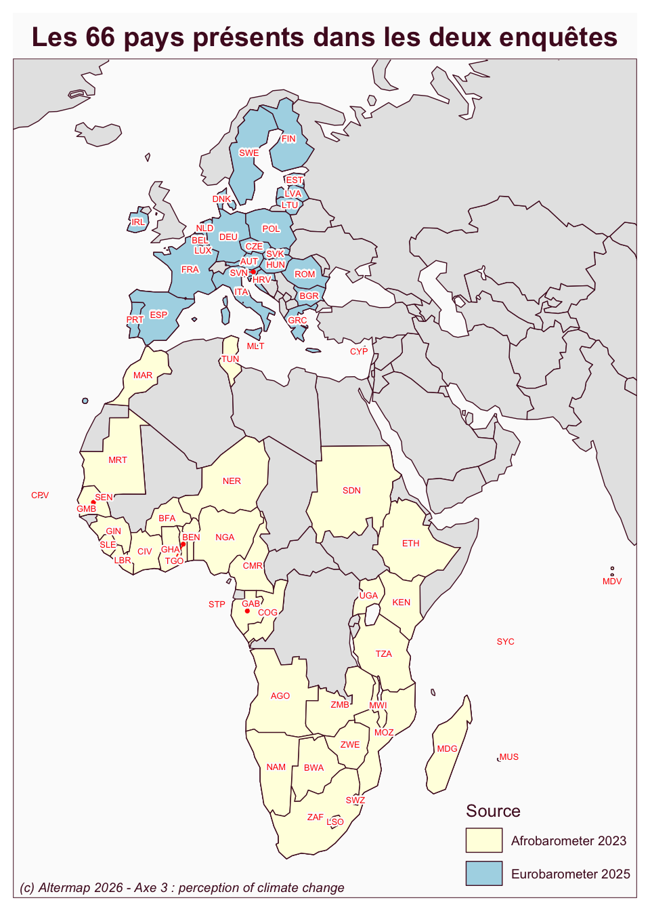
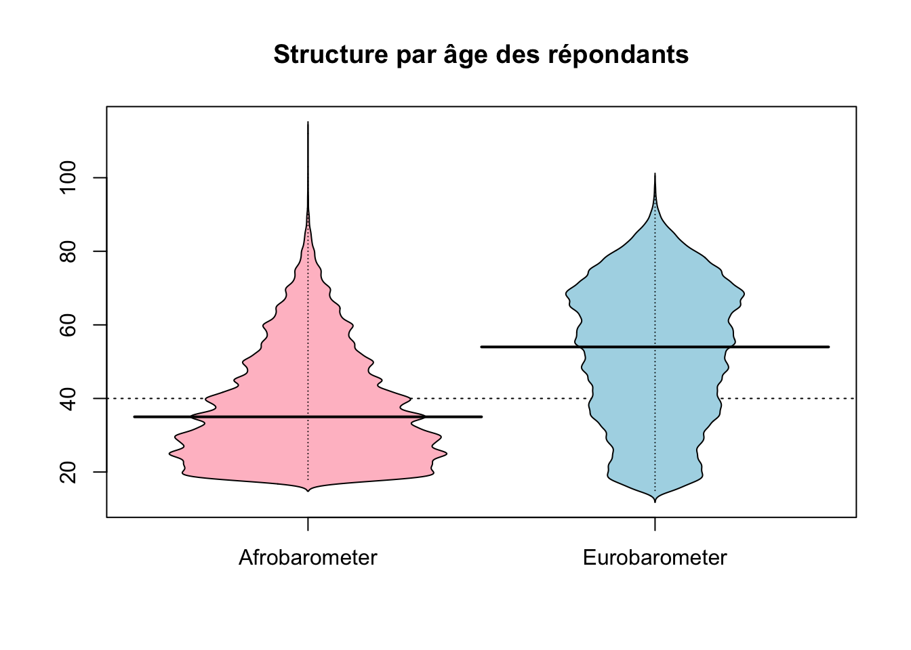
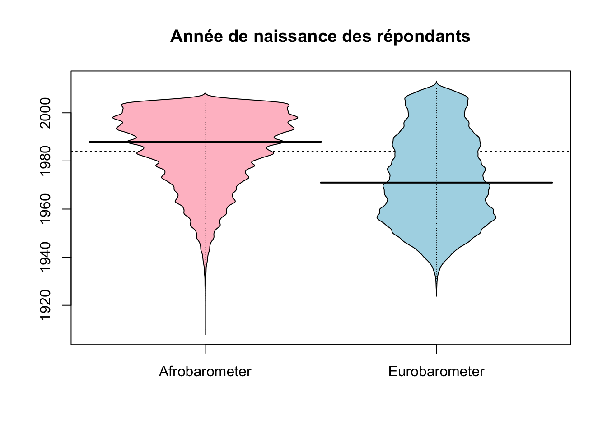
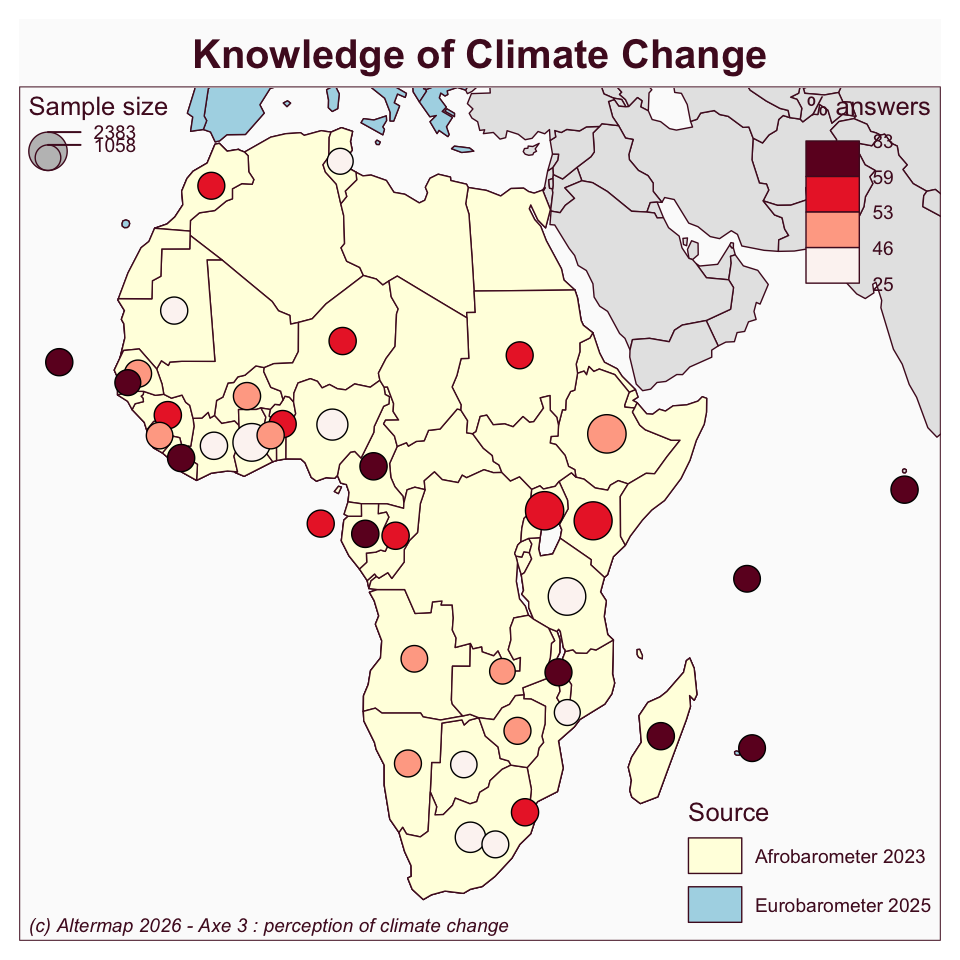
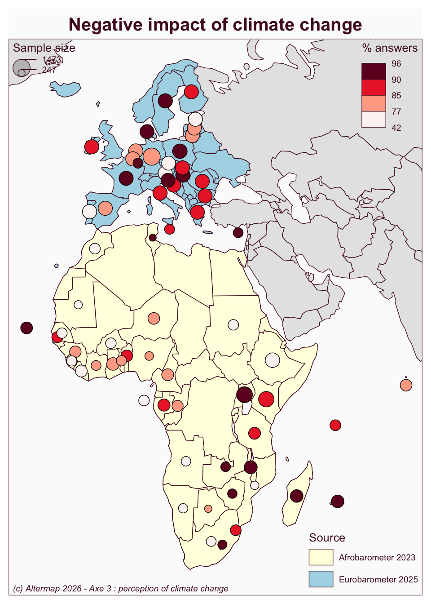
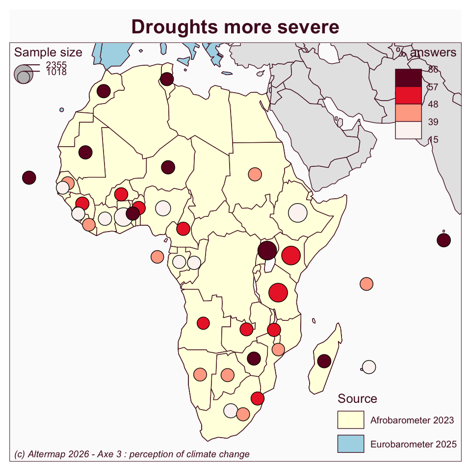
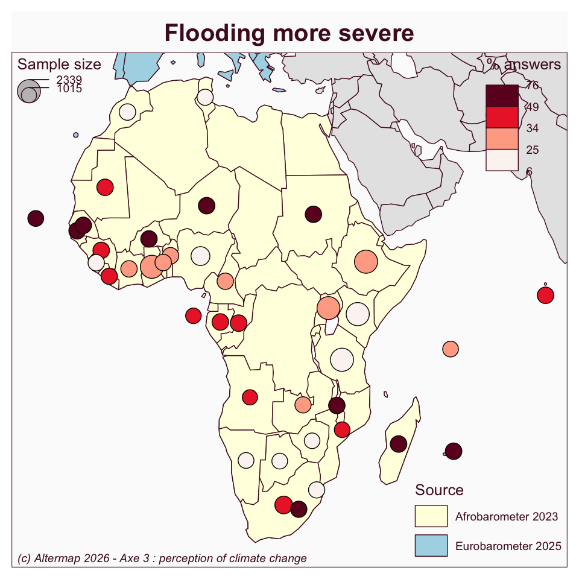
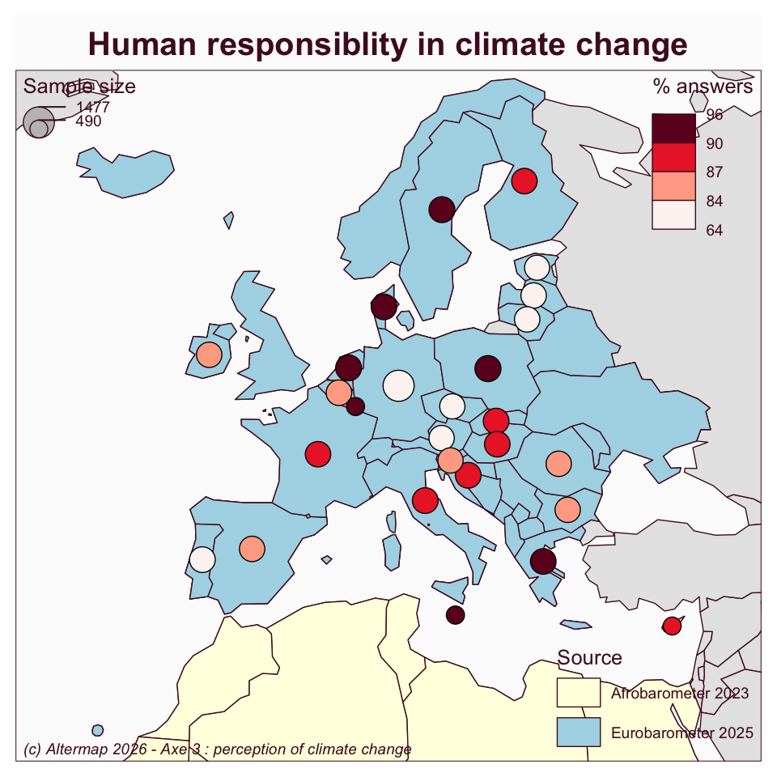
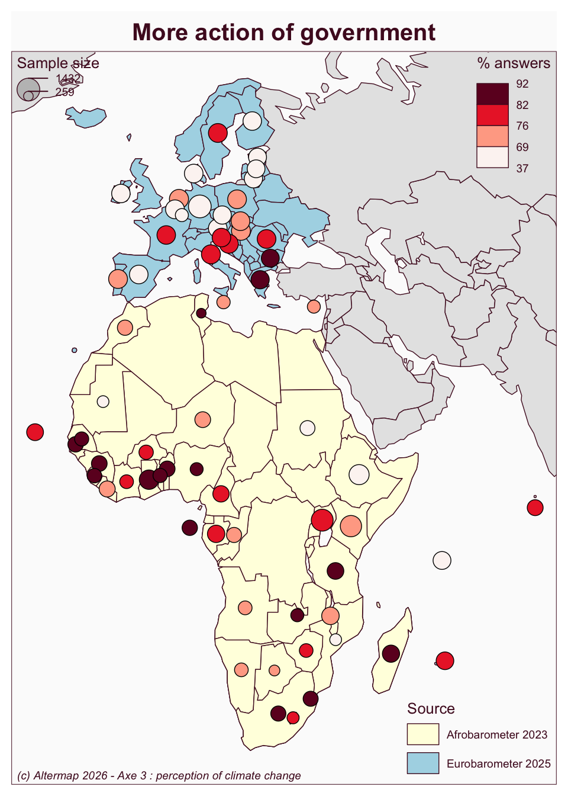

Dans le cadre de l’axe 3 du projet Altermap on se propose de mettre en relation les deux grands questionnaires Eurobarometer & Afrobarometer en ciblant particulièrment les questions relatives au changement climatique et la perception des risques associés.
A. IMPORTATION
A.1 Afrobarometer 2023
Nous avons retenu l’édition la plus récente de données harmonisées entre les différents pays africains de l’Afrobarometer, soit la vague n°9, disponible ici.
On importe l’ensemble du fichier que l’on convertit en factor, puis on construit un dictionnaire des variables en nous servant des labels.
A.2 EuroBarometer 2025
Nous avons retenu l’Eurobarometer SP565 (enquête 103.2), spécialement consacré au changement climatique qui sont disponible en suivant ce lien.
On importe l’ensemble du fichier que l’on convertit en factor, puis on construit un dictionnaire des variables en nous servant des labels.
B. VARIABLES EXPLICATIVES
On charge les deux fichiers et leurs métadonnées :
B.1 Métadonnées
On va commencer par créer deux fichiers (un pour chaque enquête) ne contenant que les identifiants, la source, l’année et le pondérant, c’est-à-dire les informations de bases qui doivent figurer dans tout fichier. Ces colonnes permettront notamment l’enrichissement futur de la base grâce à l’identification unique.
Métadonnées Afrobarometer 2023
survey
year
id
wgt
Afrobarometer
2023
ANG0001
1.2578534
Afrobarometer
2023
ANG0002
0.6968755
Afrobarometer
2023
ANG0003
0.6968755
Afrobarometer
2023
ANG0004
2.0906264
Afrobarometer
2023
ANG0005
1.3937510
Afrobarometer
2023
ANG0006
1.6771379
Métadonnées Eurobarometer 2023
survey
year
id
wgt
Eurobarometer
2025
150000001
1.419521
Eurobarometer
2025
90000002
0.698007
Eurobarometer
2025
160000003
0.743680
Eurobarometer
2025
350000004
0.771950
Eurobarometer
2025
140000005
0.600188
Eurobarometer
2025
140000006
0.681988
B.2 Localisation
Il s’agit ici d’informations indispensables pour localiser les personnes enquêtées (pays) mais aussi examiner la stratification spatiale (strates) et produire d’éventuelles analyses cartographiques des résultats.
Pays d’enquête
On extrait le nom des pays (en anglais) et on fusionne au passage les deux Allemagnes séparées dans l’enquête EuroBroadMap.
Pays présents dans l’enquête Afrobarometer 2023
Pays
Effectif
1
Angola
1200
2
Benin
1200
3
Botswana
1200
4
Burkina Faso
1200
5
Cabo Verde
1199
6
Cameroon
1200
7
Congo-Brazzaville
1200
8
Côte d’Ivoire
1200
9
Eswatini
1200
10
Ethiopia
2400
11
Gabon
1200
12
Gambia
1200
13
Ghana
2369
14
Guinea
1200
15
Kenya
2400
16
Lesotho
1200
17
Liberia
1200
18
Madagascar
1200
19
Malawi
1200
20
Mali
1200
21
Mauritania
1200
22
Mauritius
1200
23
Morocco
1200
24
Mozambique
1120
25
Namibia
1200
26
Niger
1200
27
Nigeria
1600
28
São Tomé and Príncipe
1200
29
Senegal
1200
30
Seychelles
1176
31
Sierra Leone
1200
32
South Africa
1580
33
Sudan
1200
34
Tanzania
2400
35
Togo
1200
36
Tunisia
1200
37
Uganda
2400
38
Zambia
1200
39
Zimbabwe
1200
Pays présents dans l’enquête Afrobarometer 2023
Pays
Effectif
1
Austria
1008
2
Belgium
1003
3
Bulgaria
1018
4
Croatia
1022
5
Cyprus
499
6
Czech Republic
1005
7
Denmark
1002
8
Estonia
1006
9
Finland
1001
10
France
1002
11
Germany
1509
12
Greece
1003
13
Hungary
1017
14
Ireland
1007
15
Italy
1018
16
Latvia
1008
17
Lithuania
1014
18
Luxembourg
505
19
Malta
503
20
Netherlands
1021
21
Poland
1008
22
Portugal
1053
23
Romania
1038
24
Slovakia
1005
25
Slovenia
1009
26
Spain
1004
27
Sweden
1020
Code ISO3
On transforme les noms de pays en code ISO3 afin de pouvoir ultérieurement visualiser cartographiquement les résultats.
On représente les 66 pays présents dans la réunion des deux enquêtes:

Régions infranationale
Les deux enquêtes indiquent unniveau infranational de découpage qui peut être intéressant pour des analyses plus géographiques même si les effectifs sont faibles. Un petit programme sera créé dans le cas de l’Eurobaromètre pour fusionner des colonnes …
On peut indiquer à titre d’exemple la ventilation des effectifs d’enquête en France et au Sénégal en comparant le nombre de questionnaire et le poids après redressement. Ceci permet de vérifier si la stratification des enquêtes a bien été faite proportionellement à la population réelle des régions.
Sénégal : Il y a très peu de différence entre les effectifs collectés et le poids réell dans la population.
Effectif d’enquête par régions au Sénégal
Région
Effectif
Poids
DAKAR
312
310.6
DIOURBEL
128
126.6
FATICK
56
60.2
KAFFRINE
48
45.8
KAOLACK
80
82.1
KEDOUGOU
16
12.8
KOLDA
56
54.1
LOUGA
72
76.3
MATAM
48
46.7
SAINT-LOUIS
80
79.9
SEDHIOU
40
37.1
TAMBACOUNDA
56
56.4
THIES
160
161.0
ZIGUINCHOR
48
50.3
France : Il y a des écarts plus importants entre les effectifs d’enquête et le poids en termes de population (ex. 9 enquêtes seulement en pays de Loire pour un poids attendu de 45). Cela s’explique sans doute par le fait que les strates n’ont pas été constituées par régions mais dans une maille plus large telle que les ZEAT. Les régions métropolitaines (Ile de France, Rhône-ALpes, PACA) sont toutes sur-représentées.
Effectif d’enquête par régions en France
Région
Effectif
Poids
FR10 - Ile-de-France
200
189.0
FRB0 - Centre — Val de Loire
24
40.0
FRC1 - Bourgogne
16
25.4
FRC2 - Franche-Comte
28
18.2
FRD1 - Basse-Normandie
16
23.2
FRD2 - Haute-Normandie
24
28.5
FRE1 - Nord-Pas de Calais
60
62.0
FRE2 - Picardie
47
29.1
FRF1 - Alsace
39
30.1
FRF2 - Champagne-Ardenne
28
20.2
FRF3 - Lorraine
28
36.2
FRG0 - Pays de la Loire
9
45.0
FRH0 - Bretagne
71
53.9
FRI1 - Aquitaine
62
56.7
FRI2 - Limousin
8
11.6
FRI3 - Poitou-Charentes
16
29.1
FRJ1 - Languedoc-Roussillon
23
46.5
FRJ2 - Midi-Pyrenees
43
50.0
FRK1 - Auvergne
24
21.6
FRK2 - Rhone-Alpes
146
104.1
FRL0 - Provence-Alpes-Cote d’Azur
90
81.7
Urbain-rural
Les deux enquêtes proposent une typologie en trois modalités comme on peut le voir dans les tableaux ci-dessous :
Typologie Urbain-Rural dans Afrobarometer 2023
modalités
effectif
Urban
24772
Rural
27984
Peri-urban
688
Typologie Urbain-Rural dans Eurobarometer 2025
modalités
effectif
Cities/urban
10553
Towns/suburbs
8550
Rural
7205
On décide d’harmoniser en isolant le rural vis à vis des autres modalités urbaine et semi-urbaine que l’on regroupe. On aboutit à un tableau a priori conforme à l’intuition que l’urbanisation est plus importante dans les pays européens que dans les pays africains, ce qui ne serait pas le cas si on avait regroupé la catégorie intermédiaire avec le rural.
Variable urbain-rural harmonisée
Caractéristique
Rural N = 351891
Urban N = 445631
p-valeur2
survey
<0,001
Afrobarometer
27984 (52%)
25460 (48%)
Eurobarometer
7205 (27%)
19103 (73%)
1 n (%)
2 test du khi-deux d’indépendance
B.3 Individus
Sexe/Genre
l’Afromarometer 2023 emploie le concept de sexe (en deux modalités) tandis que l’Eurobarometer 2025 semble employer le concept de genre (en trois modalités). Toutefois l’analyse des deux tableaux montre que l’EuroBarometer est probablement hypocrite dans la mesure où les cas non binaires sont très peu nombreux et surtout mélangés avec les non réponses donc impossible à identifier
Variablesexedans Afrobarometer 2023
modalités
effectif
Man
26706
Woman
26738
Variablegenredans Eurobarometer 2025
modalités
effectif
Man
12372
Woman
13902
None of the above/ Non binary/ do not recognize yourself in above categories/Prefer not to say
34
On décide donc de passer en non réponses les 34 cas de l’Eurobarometre et d’appeler la variable harmonisée sexe :
Caractéristique
Man N = 390781
Woman N = 406401
p-valeur2
survey
<0,001
Afrobarometer
26706 (50%)
26738 (50%)
Eurobarometer
12372 (47%)
13902 (53%)
1 n (%)
2 test du khi-deux d’indépendance
Âge
Cette variable est à manipuler avec précaution dans R car c’est au départ un factor. Et si on convertit en numérique sans passer par le mode caractère il peut arriver qu’un individu de 19 ans (2e modalité) se retouve âge de … 2 ans ! Il faut faire attention également aux valeurs extrêmes type “-de 15 ans” et “plus de 100 ans”. Mais au prix de ces précautions on obtient une variable quantitative donnant l’axe des individus.
Nous ne discutons pas immédiatement du problème du choix des classes d’âge mais il convient de souligner les différences structurelles de structure par âge des deux échantillons. L’âge médian est en effet de 35 ans pour l’échantillon de l’Afrobarometer 2023 contre 54 ans pour celui de l’Eurobarometer 2025. Il faudra donc bien réfléchir à ce que l’on entend par “Jeunes”, “Adultes” ou “Vieux” dans chacun des deux contextes …

Génération
La génération, entendue comme l’année de naissance est une variable fondamentale pour l’analyse et l’interprétation des résultats. Elle se déduit approximativement de l’âge par soustraction, faute de disposer d’une information plus précise dans les deux questionnaires. On tient évidemment compte du décalage de deux ans entre les deux enquêtes.
Min. 1st Qu. Median Mean 3rd Qu. Max. NA's
1911 1975 1988 1985 1997 2005 60
Min. 1st Qu. Median Mean 3rd Qu. Max.
1927 1958 1971 1973 1988 2010
L’analyse des valeurs médianes nous indique que dans l’échantillon Afrobarometer, 50% des personnes interrogées sont nées après 1985 tandis que dans l’échantillon EuroBarometer 50% sont nées après 1971, soit un décalage de 14 ans.

On ajoute une partitition en 5 classes (gen5) élaborée par les travaux des sociologues Strauss et Howe. Cette typologie est a priori surtout valable dans le monde occidental et sans doute davantage journalistique que scientifique. Mais elle recoupe par certains aspects l’histoire coloniale de l’Afrique.
Silent (< 1946)
Baby Boomers (1946-1964) _ 3. Generation X (1965-1980)
Generation Y ou ‘Millenials’ (1981-1996)
Generation Z (1997-2012)
Caractéristique
Afrobarometer N = 534441
Eurobarometer N = 263081
p-valeur2
gen5
<0,001
1. Ancient (1910-1945)
628 (1,2%)
1376 (5,2%)
2. Boomers (1946-1964)
6281 (12%)
8907 (34%)
3. Gen. X (1965-1980)
11820 (22%)
7082 (27%)
4. Gen. Y (1981-1996)
21706 (41%)
5690 (22%)
5. Gen. Z (1997-2012)
12949 (24%)
3253 (12%)
Manquant
60
0
1 n (%)
2 test du khi-deux d’indépendance
Il apparaît en tous les cas très clairement une très forte différence de répartition entre les deux échantillons. Et si on admet que le étudiants universitaires qui seront ciblés par les travaux d’Altermap se situent plutôt dans la génération Z, alors on voit que l’échantillon sera potentiellement plus important en Afrique qu’en Europe, même si cela est à nuancer par le niveau d’étude …
Niveau d’éducation
Les choses se corsent un peu avec le niveau d’éducation mais l’harmonisation est possible car les catégories sont détaillées dans chacune des enquêtes :
Informal schooling only (including Koranic schooling)
2038
Some primary schooling
7801
Primary school completed
7341
Intermediate school or Some secondary school / high school
10612
Secondary school / high school completed
8764
Post-secondary qualifications, other than university e.g. a diploma or degree from a polytechnic or college
3131
Some university
2400
University completed
3123
Post-graduate
533
Refused
90
Don’t know
51
Variableniveau d’étude (d9a) dans Eurobarometer 2025
modalités
effectif
Pre-primary education (include no education)
158
Primary education
1243
Lower secondary education
4228
Upper secondary education
9651
Post-secondary non tertiary (including pre-vocational or vocational education)
2131
Short-cycle tertiary
1876
Bachelor or equivalent
3473
Master or equivalent
3209
Doctoral or equivalent
309
Education up to ISCED 4 completed abroad
0
Education ISCED 5 and above completed abroad
0
Refusal (SPONTANEOUS)
19
Don’t know (SPONTANEOUS)
11
On propose de se ramener à quatre paliers correspondant classiquement aux différents cycles
0 : aucune scolarisation ou informelle
1 : scolarisation primaire
2 : scolarisation secondaire
3 : scolarisation supérieure
Variable niveau d’étude harmonisée
Caractéristique
0. None/Informal N = 97561
1. Primary N = 163851
2. Secondary N = 353861
3. Superior N = 180541
p-valeur2
survey
<0,001
Afrobarometer
9598 (18%)
15142 (28%)
19376 (36%)
9187 (17%)
Eurobarometer
158 (0,6%)
1243 (4,7%)
16010 (61%)
8867 (34%)
1 n (%)
2 test du khi-deux d’indépendance
étudiant
Plutôt que de chercher à harmoniser la variable occupation dans les deux enquêtes, nous limiterons notre harmonisation au repérage des personnes qui se sont déclarées “etudiant.e” afin d’avoir une idée de l’effectif disponible dans l’ensemble des deux enquêtes :
Caractéristique
No N = 733461
Yes N = 64061
p-valeur2
survey
<0,001
Afrobarometer
48875 (91%)
4569 (8,5%)
Eurobarometer
24471 (93%)
1837 (7,0%)
1 n (%)
2 test du khi-deux d’indépendance
Comme on peut le voir l’effectif est très faible mais relativement comparable dans les deux enquêtes: de l’ordre de 7 à 9% des personnes interrogées déclarent un statut d’étudiant.
Nous effectuons un zoom sur la France et le Sénegal pour avoir une idée plus précise de la base dont nous disposerons pour comparer ensuite à nos propres enquêtes à UPC et l’UCAD.
Caractéristique
No N = 20081
Yes N = 1941
p-valeur2
country
0,5
France
918 (92%)
84 (8,4%)
Senegal
1090 (91%)
110 (9,2%)
1 n (%)
2 test du khi-deux d’indépendance
Nous disposerons donc dans chaque pays d’un petit échantillon de référence d’environ 100 personnes (soit 8 à 9% des personnes enquêtées) qu’on pourra comparer à nos résultats d’enquête.
C. VARIABLES A EXPLIQUER
On part du document de comparaison établi par Malika Madelin et on essaye de créer quelques variables conjointes aux deux enquêtes tout en gardant la trace des variables propres à chaque enquête dans leur forme originale.
C.1 Connaissance
Les personnes intrrogées ont-elles entendu parler du changement climatque. Cette question n’est disponible que dans l’Afrobarometer (Q64 : Have you heard about climate change, or haven’t you had the chance to hear about this yet?) mais est sans équivalent dans l’Eurobaromètre ce qui est dommage. Et ce qui est sans doute révélateur d’une forme de sentiment de supériorité des enquêteurs européens qui postulent qu le sujet est évident et connu de tous les citoyens de leur continent…
-Connaisances du changement climatique (Afrobarometer)
modalités
effectif
Missing
0
No
25261
Yes
26735
Refused to Answer
32
Don’t Know
1416
Comme on peut le constater, près de la moitié des personnes interrogées par Afrobarometer déclarent ne pas connaître le sujet du changement climatique. Et logiquement, on ne les interrogera pas ensuite sur les effets du changement climatque dans la question suivante, ce qui est cohérent.
L’information étant manquant dans l’Eurobarometer on crée juste un champ vide …
C.2 Impact
On cherche à mesurer dans quelle mesure les citoyens (informés …) évaluent l’impact du changement climatique sur une échelle allant du négatif (impact fort, dommages conséquents…) au positif (impact faibles ou nuls, bénéfices éventuels, …). Il s’agit évidemment d’une formulation imprécise où l’harmonisation est rendue délicate par les différences de formulation dans les deux questionnaires.
Afrobarometer
La variable qui semble la plus adaptée pour mesuer l’impact est Q67B : Do you think climate change is making life in [your country] better or worse, or haven’t you heard enough to say?. Point important, elle n’est posée que si les personnes ont répondu positivement à la question précédente sur la connaissance du phénomène. Cela réduit donc l’effectif de réponse de moitié puisque toutes les personnes qui ont déclaré ne pas connaîitre le changement climatique ont été exclues et n’ont pas répondu ce qui donnela modalité “Not Applicable” à ne pas confondre avec les refus de répondre ou les déclarations d’ignorance.
-Impact du changement climatique dans l’Afrobarometer (variable brute)
modalités
effectif
Missing
0
Much better
1390
Somewhat better
3360
Neither/ no change / about the same
1934
Somewhat worse
8992
Much worse
10213
Not Applicable
26709
Refused
13
Don’t know / Haven’t heard enough to say
833
Si on élimine les non réponses et les personnes non interrogées, on aboutit à une variable se présentant comme une échelle de Likert à 5 paliers
-Impact du changement climatique dans l’Afrobarometer (échelle de Likert à 5 paliers)
modalités
effectif
1.Much worse
10213
2.Somewhat worse
8992
3.no change
1934
4.Somewhat better
3360
5.Much better
1390
Eurobarometer
la variable la plus proches est QD2. Dans quelle mesure pensez-vous que le changement climatique est un problème grave en ce moment ? ce qui est légèrement différent mais tout de même comparable. Même si on est en présence d’une échelle de Liket à quatre paliers qui exclue les réponses intermédiaires ou neutres.
-Impact du changement climatique dans l’Eurobarometer (échelle de Likert à 4 paliers)
modalités
effectif
A very serious problem
10153
A fairly serious problem
11903
Not a very serious problem
3266
Not a serious problem at all
673
Don’t know (SPONTANEOUS)
313
Harmonisation
En retirant le palier central de l’Eurobarometer, on peut construire une échelle à quatre paliers commune aux deux enquêtes. Comme les libllés sont différents, on adopte une description plus abstraite qui ne reprenne aucune des deux précédentes.
-Impact du changement climatique harmonisé (échelle de Likert à 4 paliers)
Caractéristique
1. Very negative N = 203661
2. Negative N = 208951
3. Positive N = 66261
4.Very Positive N = 20631
p-valeur2
survey
<0,001
Afrobarometer
10213 (43%)
8992 (38%)
3360 (14%)
1390 (5,8%)
Eurobarometer
10153 (39%)
11903 (46%)
3266 (13%)
673 (2,6%)
1 n (%)
2 test du khi-deux d’indépendance
C.3 Evolution
Dans le questionnaire Afrobarometer, on dispose d’une information plus précise sur l’évolution de phénomènes climatiques en ciblant des événements précis et la perception de leur évolution depuis 10 ans (soit 2013-2023). Ces données ne sont malheureusement pas disponibles dans le questionnaire Eurobarometer
Sécheresses
On va utiliser ici la question Q66A formulée ainsi “In your experience, over the past 10 years, has there been any change in the severity of the following events in the area where you live? Have they become more severe, less severe, or stayed about the same: drought?”. Comme on peut le voir la question ne supposait pas une connaissance du changement climatique et a pu être posée à l’ensemble de l’échantillon. Elle se présente comme une échelle de Likert à 5 paliers
-Evolution de l’impact des sécheresses
modalités
effectif
Missing
0
Much more severe
14439
Somewhat more severe
10475
Stayed the same
10884
Somewhat less severe
7896
Much less severe
7810
Refused
44
Don’t know
1896
Not asked in the country
0
On aligne les réponses sur une échelle allant du plus négatif (1) au plus positif (5)
Caractéristique
N = 534441
clim_evol_drought
1. Much less severe
7810 (15%)
2. Somewhat less severe
7896 (15%)
3. Stayed the same
10884 (21%)
4. Somewhat more severe
10475 (20%)
5. Much more severe
14439 (28%)
Manquant
1940
1 n (%)
Inondations
On va utiliser ici la question Q66B formulée ainsi “In your experience, over the past 10 years, has there been any change in the severity of the following events in the area where you live? Have they become more severe, less severe, or stayed about the same: flooding?”. Comme on peut le voir la question ne supposait pas une connaissance du changement climatique et a pu être posée à l’ensemble de l’échantillon. Elle se présente comme une échelle de Likert à 5 paliers
-Responsabilité du changement climatique dans l’Afrobarometer
modalités
effectif
Missing
0
Much more severe
9332
Somewhat more severe
8214
Stayed the same
12446
Somewhat less severe
9018
Much less severe
12413
Refused
72
Don’t know
1949
Not asked in the country
0
On aligne les réponses sur une échelle allant du plus négatif (1) au plus positif (5)
Caractéristique
N = 534441
clim_evol_flooding
1.Much less severe
12413 (24%)
2. Somewhat less severe
9018 (18%)
3. Stayed the same
12446 (24%)
4. Somewhat more severe
8214 (16%)
5. Much more severe
9332 (18%)
Manquant
2021
1 n (%)
C.4 Responsabilité
Cette variable est disponible dans l’Eurobarometer 2025 mais pas dans la compilation harmonisée de l’Afrobarometer 2023. Elle pourrait néanmoins être trouvée dans des éditions antérieures ou spécifique à des pays. Les personnes interrogées dans l’Eurobarometer ont-répondu à la question suivante (SD1: To what extent do you agree with the following statement on climate change? Climate change is caused by human activity).
modalités
effectif
Totally agree
10294
Tend to agree
11745
Tend to disagree
2817
Totally disagree
972
Don’t know (SPONTANEOUS)
480
On la recode comme échelle de Likert à 4 paliers en partant des personnes en total désaccord (1) pour aller aux personnes en total accord (4)
Caractéristique
N = 263081
clim_resp
1. Totally disagree
972 (3,8%)
2. Tend to disagree
2817 (11%)
3.Tend to agree
11745 (45%)
4. Totally agree
10294 (40%)
Manquant
480
1 n (%)
C.5 Action
Cette variable est posée presque dans les mêmes termes dans les deux enquêtes et on peut raisonnablement proposer une harmonisation.
Afrobarometer
Cette variable est conditionné par le fait que les personnes enquêtées savent ce qu’est le changement climatique ce qui réduit automatiquement l’échantillon de moitié. Elle est formulée ainsi: “Q70C: Should the government of your country need to do more to fight climate change”
modalités
effectif
Missing
0
Doing enough
1516
Need to do somewhat more
4173
Need to do a lot more
20445
Not applicable
26709
Refused
27
Don’t know
574
On recode sur une échelle de Likert numérotée de 1 à 3
Caractéristique
N = 534441
Q70c. Do more to fight climate change: government
1. Doing enough
1516 (5,8%)
2. Need to do somewhat more
4173 (16%)
3. Need to do a lot more
20445 (78%)
Manquant
27310
1 n (%)
Eurobarometer
On utilise ici la question qd7 qui est formulée de façon un peu différente.
modalités
effectif
Enough
6457
Not enough
16746
Too much
1599
Don’t know (SPONTANEOUS)
1506
On recode sur une échelle de Likert numérotée de 1 à 3
Caractéristique
N = 263081
clim_action_ebm
1. Too much
1599 (6,4%)
2. Enough
6457 (26%)
3. Not enough
16746 (68%)
Manquant
1506
1 n (%)
Harmonisation
On décide d’harmoniser en niveau 1, 2, 3, indépendamment du texte car on fait l’hypothèse que les personnes se situent sur l’échelle plutôt que sur les mots
[1] "1. Too much" "2. Enough" "3. Not enough"
Caractéristique
1. Low N = 31151
2. Medium N = 106301
3. High N = 371911
p-valeur2
survey
<0,001
Afrobarometer
1516 (5,8%)
4173 (16%)
20445 (78%)
Eurobarometer
1599 (6,4%)
6457 (26%)
16746 (68%)
1 n (%)
2 test du khi-deux d’indépendance
N.B. Cette harmonisation est évidemment discutable …
C.6 Autres
Nous procéderons ultérieurement à d’autres essais d’harmonisation, mais on souhaite déjà tester les possibilités d’analyse de la variable clim_impact harmonisée.
D. ASSEMBLAGE
D.1 Recodage
On assemble les deux bases et on procède à quelques ajustements des formats de variables. On leur ajoute des labels pour une utilisation plus facile du tableau et on précide lorsque cela est nécessaire la source précise (n° de question).
Aperçu du tableau de données harmonisé
survey
year
id
wgt
country
iso3
region
urbrur
sex
age
gen
gen5
edu_abm
edu_ebm
edu
stu
clim_know
clim_impact_abm
clim_impact_ebm
clim_impact
clim_evol_drought
clim_evol_flooding
clim_resp
clim_action_abm
clim_action_ebm
clim_action
Afrobarometer
2023
ANG0001
1.2578534
Angola
AGO
Luanda
Urban
Woman
39
1984
4. Gen. Y (1981-1996)
Intermediate school or Some secondary school / high school
NA
2. Secondary
No
Yes
2.Somewhat worse
NA
2. Negative
3. Stayed the same
3. Stayed the same
NA
2. Need to do somewhat more
NA
2. Medium
Afrobarometer
2023
ANG0002
0.6968755
Angola
AGO
Uíge
Urban
Woman
24
1999
5. Gen. Z (1997-2012)
Some university
NA
3. Superior
Yes
Yes
5.Much better
NA
4.Very Positive
4. Somewhat more severe
4. Somewhat more severe
NA
2. Need to do somewhat more
NA
2. Medium
Afrobarometer
2023
ANG0003
0.6968755
Angola
AGO
Uíge
Urban
Woman
29
1994
4. Gen. Y (1981-1996)
Secondary school / high school completed
NA
2. Secondary
No
No
NA
NA
NA
5. Much more severe
4. Somewhat more severe
NA
NA
NA
NA
Afrobarometer
2023
ANG0004
2.0906264
Angola
AGO
Uíge
Urban
Man
19
2004
5. Gen. Z (1997-2012)
Primary school completed
NA
1. Primary
Yes
Yes
NA
NA
NA
2. Somewhat less severe
2. Somewhat less severe
NA
3. Need to do a lot more
NA
3. High
Afrobarometer
2023
ANG0005
1.3937510
Angola
AGO
Uíge
Urban
Man
28
1995
4. Gen. Y (1981-1996)
Intermediate school or Some secondary school / high school
NA
2. Secondary
No
Yes
1.Much worse
NA
1. Very negative
3. Stayed the same
NA
NA
3. Need to do a lot more
NA
3. High
Afrobarometer
2023
ANG0006
1.6771379
Angola
AGO
Luanda
Urban
Man
18
2005
5. Gen. Z (1997-2012)
Intermediate school or Some secondary school / high school
NA
2. Secondary
No
Yes
1.Much worse
NA
1. Very negative
NA
NA
NA
3. Need to do a lot more
NA
3. High
Le tableau final comporte 79752 observations et 27 variables. Certaines variables comportent trois colonnes lorsque l’on estime que l’harmonisation a fait perdre de l’information et qu’on préfère garder les deux variables initiales propre à chaque enquête.
D.2 Métadonnées
On crée un fichier de métadonnées sur le libellé des variables que l’on sauvegarde.
Liste des variables de la base de données harmonisée.
variable
definition
survey
Organism in charge of survey
year
Year of survey
id
Unique identificator
wgt
Weight
country
Country name
iso3
Country ISO3 code
region
Infranational location
urbrur
Rural/Urban typology
sex
Sex
age
Age
gen
Generation (year of birth)
gen5
Generation in Strauss-Howe 5 groups
edu_abm
Level of education (ABM)
edu_ebm
Level of education (EBM)
edu
Level of education (harmonised)
stu
Declare ‘student’ as activity
clim_know
Knowledge about climate change (ABM)
clim_impact_abm
Impact of climate change (ABM)
clim_impact_ebm
Impact of climate change (EBM)
clim_impact
Impact of climate change (harmonised)
clim_evol_drought
Evolution of droughts (ABM)
clim_evol_flooding
Evolution of floodings (ABM)
clim_resp
Human responsability in climate change (EBM)
clim_action_abm
Action du gouvernemtn (ABM)
clim_action_ebm
Action du gouvernement (EBM)
clim_action
Action du gouvernement (harmonised)
E. COMPARAISONS
On procède à quelques analyses rapides sur les variables harmonisées relatives au changement climatique. On effectue les calculs avec pondération pour redresser les échantillons et on ramène les échelles de Likert à deux classes.
E.1 Connaissance
Rappelons que cette question Q67A n’est disponible que dans l’Afrobarometer et est libellée ainsi Have you heard about climate change, or haven’t you had the chance to hear about this yet?
Knowledge of climate change (Afrobarometer)
Code
Country
Yes
No
Total
% of Yes
TUN
Tunisia
817
269
1086
24.8
NGA
Nigeria
1080
477
1556
30.6
BWA
Botswana
776
349
1124
31.0
MRT
Mauritania
804
382
1187
32.2
TZA
Tanzania
1504
773
2277
33.9
LSO
Lesotho
730
431
1161
37.2
MOZ
Mozambique
674
409
1083
37.8
CIV
Côte d’Ivoire
674
525
1199
43.8
ZAF
South Africa
810
675
1484
45.5
GHA
Ghana
1245
1051
2297
45.8
ZWE
Zimbabwe
636
539
1175
45.9
NAM
Namibia
630
543
1172
46.3
TGO
Togo
632
562
1194
47.0
ETH
Ethiopia
1255
1128
2383
47.3
AGO
Angola
590
550
1139
48.2
SEN
Senegal
611
576
1187
48.5
BFA
Burkina Faso
607
587
1194
49.2
ZMB
Zambia
535
523
1058
49.4
SLE
Sierra Leone
552
584
1136
51.4
COG
Congo-Brazzaville
565
632
1197
52.8
SWZ
Eswatini
558
637
1194
53.3
KEN
Kenya
1070
1263
2333
54.1
SDN
Sudan
522
653
1174
55.6
MAR
Morocco
520
651
1171
55.6
UGA
Uganda
1023
1345
2368
56.8
GIN
Guinea
517
682
1199
56.8
BEN
Benin
514
680
1194
56.9
NER
Niger
503
693
1196
58.0
STP
São Tomé and Príncipe
494
688
1182
58.2
MDV
Mali
485
708
1193
59.3
LBR
Liberia
467
727
1195
60.9
GMB
Gambia
411
669
1080
62.0
CMR
Cameroon
450
747
1197
62.4
CPV
Cabo Verde
395
794
1189
66.8
MDG
Madagascar
369
823
1192
69.0
GAB
Gabon
363
837
1200
69.7
MWI
Malawi
287
889
1176
75.6
MUS
Mauritius
277
876
1153
76.0
SYC
Seychelles
200
946
1145
82.6

E.2 Impact
On utilise la variable harmonisée qui correspond à une échelle de Likert à quatre paliers renvoyant à des définitions légèrement différentes dans les deux enquêtes. On regroupe en deux paliers pour isoler les réponses correspondant à un impact négatif assez fort ou très fort.
Impact of climate change (Afrobarometer & Eurobarometer)
Code
Country
Negative
Positive
Total
% of Negative
MRT
Mauritania
145
202
347
41.8
SDN
Sudan
268
285
553
48.4
ETH
Ethiopia
508
533
1041
48.8
MOZ
Mozambique
193
164
357
54.1
EST
Estonia
598
381
980
61.1
NAM
Namibia
268
168
436
61.5
PRT
Romania
678
339
1016
66.7
AGO
Angola
309
145
454
68.0
CZE
Czech Republic
675
292
967
69.8
STP
São Tomé and Príncipe
394
167
561
70.2
MAR
Morocco
413
166
579
71.2
LBR
Liberia
496
199
695
71.4
BFA
Burkina Faso
414
146
560
73.9
SLE
Sierra Leone
392
130
522
75.1
AUT
Austria
747
243
990
75.5
SEN
Senegal
405
130
535
75.7
ZAF
South Africa
375
114
489
76.7
TGO
Togo
410
119
529
77.5
CIV
Côte d’Ivoire
380
110
489
77.6
LVA
Latvia
779
205
985
79.1
GHA
Ghana
633
162
795
79.6
NER
Niger
540
138
678
79.7
ESP
Poland
800
199
999
80.1
CMR
Cameroon
576
132
708
81.4
NGA
Nigeria
314
68
382
82.1
MDV
Mali
564
121
685
82.4
COG
Congo-Brazzaville
516
105
620
83.1
GIN
Guinea
554
106
660
83.9
BEL
Belgium
838
160
998
84.0
DEU
Germany
1237
236
1473
84.0
LTU
Lithuania
836
157
993
84.2
NLD
Netherlands
859
154
1012
84.8
BWA
Botswana
234
42
276
84.9
ROM
Slovakia
849
146
995
85.3
HRV
Croatia
868
148
1016
85.4
BEN
Benin
578
94
673
86.0
SWZ
Eswatini
501
81
582
86.1
GAB
Gabon
641
100
741
86.5
ITA
Italy
881
135
1016
86.7
FIN
Finland
866
128
994
87.1
SYC
Seychelles
514
74
588
87.4
GMB
Gambia
538
77
614
87.5
TZA
Tanzania
625
87
713
87.7
BGR
Bulgaria
883
120
1002
88.1
KEN
Kenya
1049
141
1191
88.1
IRL
Ireland
883
117
1000
88.3
SVK
Slovenia
893
112
1005
88.8
MLT
Malta
447
54
501
89.3
GRC
Greece
897
105
1001
89.5
SVN
Spain
885
101
986
89.7
UGA
Uganda
1131
124
1256
90.1
LSO
Lesotho
381
41
422
90.3
MWI
Malawi
762
79
841
90.6
ZMB
Zambia
426
44
470
90.6
CYP
Cyprus
447
45
492
90.8
TUN
Tunisia
225
23
247
90.9
POL
Portugal
952
92
1044
91.2
CPV
Cabo Verde
641
58
698
91.8
SWE
Sweden
937
79
1016
92.2
DNK
Denmark
909
76
985
92.3
LUX
Luxembourg
464
38
502
92.5
HUN
Hungary
938
76
1013
92.5
FRA
France
926
69
995
93.1
MDG
Madagascar
752
47
800
94.1
MUS
Mauritius
755
42
797
94.8
ZWE
Zimbabwe
430
18
449
95.9

E.3.1 Evolution des sécheresses
On regroupe deux des cinq paliers de l’échelle pour mesurer la part des individus qui considèrent les sécheresses comme “plus sévères” ou “beaucoup plus sévères” que par le passé.
Droughts more severe (Afrobarometer)
Code
Country
No
Yes
Total
% of Yes
SLE
Sierra Leone
983
179
1162
15.4
GAB
Gabon
919
231
1149
20.1
NGA
Nigeria
1119
400
1519
26.4
GHA
Ghana
1664
615
2279
27.0
ZAF
South Africa
908
424
1332
31.8
GMB
Gambia
733
367
1100
33.4
COG
Congo-Brazzaville
793
401
1195
33.6
CIV
Côte d’Ivoire
755
439
1194
36.8
MUS
Mauritius
744
436
1179
36.9
ETH
Ethiopia
1452
889
2341
38.0
STP
São Tomé and Príncipe
654
422
1075
39.2
SDN
Sudan
703
469
1172
40.0
LBR
Liberia
644
442
1086
40.7
SYC
Seychelles
652
461
1113
41.4
NAM
Namibia
647
473
1120
42.3
SEN
Senegal
639
518
1157
44.8
MOZ
Mozambique
580
490
1070
45.8
LSO
Lesotho
623
538
1161
46.4
BWA
Botswana
606
543
1149
47.3
SWZ
Eswatini
605
558
1163
48.0
CMR
Cameroon
610
577
1187
48.6
KEN
Kenya
1161
1180
2341
50.4
BFA
Burkina Faso
579
601
1181
50.9
ZMB
Zambia
554
584
1138
51.3
AGO
Angola
477
541
1018
53.2
GIN
Guinea
558
639
1197
53.4
BEN
Benin
534
666
1200
55.5
MWI
Malawi
521
664
1186
56.0
TZA
Tanzania
1032
1323
2355
56.2
UGA
Uganda
978
1361
2339
58.2
MRT
Mauritania
472
718
1191
60.3
TGO
Togo
463
732
1195
61.3
ZWE
Zimbabwe
447
718
1165
61.6
MDV
Mali
440
746
1186
62.9
MAR
Morocco
399
794
1193
66.6
TUN
Tunisia
328
832
1160
71.7
NER
Niger
319
877
1195
73.3
CPV
Cabo Verde
218
955
1173
81.4
MDG
Madagascar
167
1027
1193
86.0

E.3.2 Evolution des inondations
On regroupe deux des cinq paliers de l’échelle pour mesurer la part des individus qui considèrent les inondations comme “plus sévères” ou “beaucoup plus sévères” que par le passé.
Flooding more severe (Afrobarometer)
Code
Country
No
Yes
Total
% of Yes
BWA
Botswana
1018
64
1082
5.9
SLE
Sierra Leone
1068
106
1174
9.0
TZA
Tanzania
2105
229
2334
9.8
MAR
Morocco
1058
129
1186
10.8
KEN
Kenya
1986
344
2330
14.8
TUN
Tunisia
971
171
1142
15.0
ZWE
Zimbabwe
872
192
1064
18.1
NAM
Namibia
870
219
1089
20.1
SWZ
Eswatini
885
267
1152
23.2
NGA
Nigeria
1184
366
1550
23.6
SYC
Seychelles
808
277
1085
25.5
GHA
Ghana
1724
600
2324
25.8
CMR
Cameroon
844
333
1177
28.3
CIV
Côte d’Ivoire
840
338
1178
28.7
UGA
Uganda
1627
660
2287
28.9
TGO
Togo
825
362
1187
30.5
ETH
Ethiopia
1613
726
2339
31.0
ZMB
Zambia
791
358
1148
31.2
BEN
Benin
796
401
1197
33.5
ZAF
South Africa
904
468
1371
34.1
MOZ
Mozambique
705
371
1076
34.5
MDV
Mali
744
448
1192
37.5
AGO
Angola
622
393
1015
38.7
GIN
Guinea
713
484
1197
40.5
STP
São Tomé and Príncipe
621
441
1062
41.6
MRT
Mauritania
692
499
1191
41.9
GAB
Gabon
657
540
1197
45.1
LBR
Liberia
630
535
1165
45.9
COG
Congo-Brazzaville
625
572
1197
47.8
SEN
Senegal
602
586
1188
49.3
MWI
Malawi
594
589
1184
49.8
CPV
Cabo Verde
531
564
1095
51.5
SDN
Sudan
570
613
1182
51.8
MDG
Madagascar
545
654
1199
54.5
BFA
Burkina Faso
518
661
1180
56.1
NER
Niger
456
739
1196
61.8
GMB
Gambia
448
743
1191
62.4
MUS
Mauritius
379
817
1197
68.3
LSO
Lesotho
280
877
1157
75.8

E.4 Responsabilité humaine
Les quatre paliers de l’échelle de Likert sont regroupés en deux niveaux pour calculer la part des personnes qui sont “plutôt d’accord” ou “totalement d’accord” avec la responsabilité des hommes dans le changement climatique actuel.
Human responsibility (Eurobarometer)
Code
Country
No
Yes
Total
% of Yes
EST
Estonia
343
615
958
64.2
PRT
Romania
290
719
1010
71.2
CZE
Czech Republic
254
717
972
73.8
AUT
Austria
212
767
980
78.3
LVA
Latvia
211
778
989
78.7
DEU
Germany
243
1233
1477
83.5
LTU
Lithuania
161
824
984
83.7
ESP
Poland
160
825
985
83.8
ROM
Slovakia
157
826
984
84.0
BEL
Belgium
155
845
1000
84.5
IRL
Ireland
142
845
987
85.6
BGR
Bulgaria
140
841
981
85.7
SVN
Spain
139
840
979
85.8
SVK
Slovenia
130
875
1005
87.1
ITA
Italy
127
882
1010
87.4
HRV
Croatia
126
882
1009
87.5
CYP
Cyprus
58
432
490
88.2
HUN
Hungary
107
890
998
89.2
FIN
Finland
103
890
993
89.6
FRA
France
99
888
987
89.9
NLD
Netherlands
100
915
1015
90.1
LUX
Luxembourg
46
451
497
90.8
GRC
Greece
92
905
997
90.8
POL
Portugal
66
964
1030
93.6
MLT
Malta
30
470
499
94.0
DNK
Denmark
59
933
992
94.1
SWE
Sweden
40
977
1017
96.0

E.5 Action du gouvernement
On regroupe ici les individus qui estiment que l’action du gouvernement face au changement climatique est “Insuffisante” (Eurobarometer) ou “A renforcer fortement” (Afrobarometer). Rappelons que l’alignement des deux questions est ici très imparfait.
1. Low 2. Medium 3. High
3115 10630 37191
More action of government (Afrobarometer & Eurobarometer)
Code
Country
Negative
Positive
Total
% of Negative
EST
Estonia
558
333
891
37.4
DNK
Denmark
449
513
962
53.4
ESP
Poland
440
516
955
54.0
AUT
Austria
422
538
961
56.1
LUX
Luxembourg
208
265
473
56.1
FIN
Finland
412
537
950
56.6
DEU
Germany
591
841
1432
58.7
LVA
Latvia
354
523
878
59.6
CZE
Czech Republic
368
552
920
60.0
MOZ
Mozambique
154
234
387
60.3
SYC
Seychelles
328
554
883
62.8
BEL
Belgium
356
629
985
63.8
SDN
Sudan
223
397
620
64.0
MRT
Mauritania
134
248
382
64.8
LTU
Lithuania
321
603
924
65.3
IRL
Ireland
304
640
944
67.8
ETH
Ethiopia
351
765
1116
68.5
MWI
Malawi
259
592
851
69.5
AGO
Angola
155
371
526
70.5
POL
Portugal
286
687
973
70.6
SVK
Slovenia
285
688
973
70.7
NLD
Netherlands
292
718
1010
71.1
CYP
Cyprus
133
334
467
71.6
PRT
Romania
276
709
985
72.0
COG
Congo-Brazzaville
168
463
631
73.4
MAR
Morocco
169
477
646
73.8
KEN
Kenya
325
931
1256
74.2
MLT
Malta
126
368
494
74.5
LBR
Liberia
178
535
713
75.1
HUN
Hungary
246
746
992
75.2
NAM
Namibia
128
393
520
75.4
BWA
Botswana
78
246
324
76.0
NER
Niger
164
524
688
76.2
GAB
Gabon
196
640
837
76.5
ITA
Italy
233
765
998
76.7
LSO
Lesotho
91
313
404
77.5
ROM
Slovakia
217
750
968
77.6
MDV
Mali
155
543
698
77.8
CPV
Cabo Verde
171
610
781
78.1
HRV
Croatia
216
775
991
78.2
SVN
Spain
206
748
955
78.4
BFA
Burkina Faso
118
454
572
79.4
SWE
Sweden
197
787
984
80.0
MUS
Mauritius
173
689
862
80.0
CIV
Côte d’Ivoire
104
420
523
80.2
UGA
Uganda
259
1065
1324
80.4
CMR
Cameroon
144
596
740
80.6
FRA
France
179
773
952
81.2
ZWE
Zimbabwe
97
421
518
81.3
BGR
Bulgaria
158
731
889
82.3
GHA
Ghana
184
857
1041
82.3
GRC
Greece
160
761
921
82.6
GIN
Guinea
118
563
681
82.7
ZAF
South Africa
103
532
635
83.8
TGO
Togo
90
472
562
84.1
STP
São Tomé and Príncipe
101
551
652
84.4
SLE
Sierra Leone
88
490
578
84.8
SEN
Senegal
75
478
553
86.4
ZMB
Zambia
62
410
471
86.9
NGA
Nigeria
61
407
468
87.0
BEN
Benin
86
593
679
87.4
TZA
Tanzania
93
677
770
88.0
MDG
Madagascar
92
726
818
88.7
GMB
Gambia
68
597
665
89.8
SWZ
Eswatini
61
567
627
90.3
TUN
Tunisia
21
238
259
92.1

Citation
BibTeX citation:
@online{grasland2026,
author = {GRASLAND, Claude and MADELIN, Malika and MENDY, Anastasie
and CHARTIER, Denis},
title = {Le Changement Climatique Dans Les Questionnaires
{Afrobarometer} 2023 \& {EuroBarometer} 2025},
date = {2026-09-06},
url = {https://worldregio.github.io/altermap/posts/2026-09-06-axe3-survey/},
langid = {en}
}